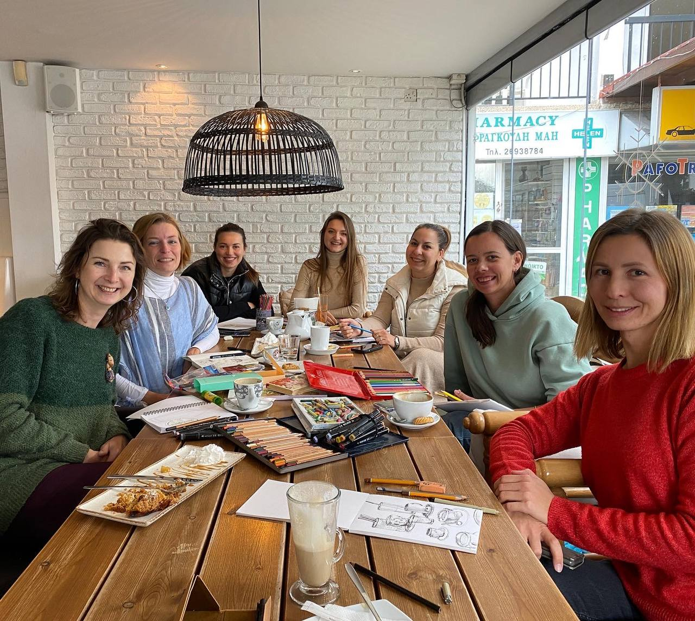
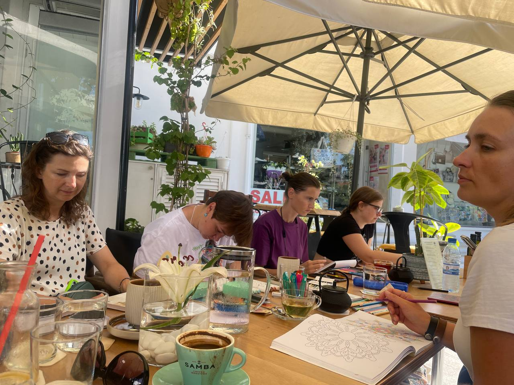
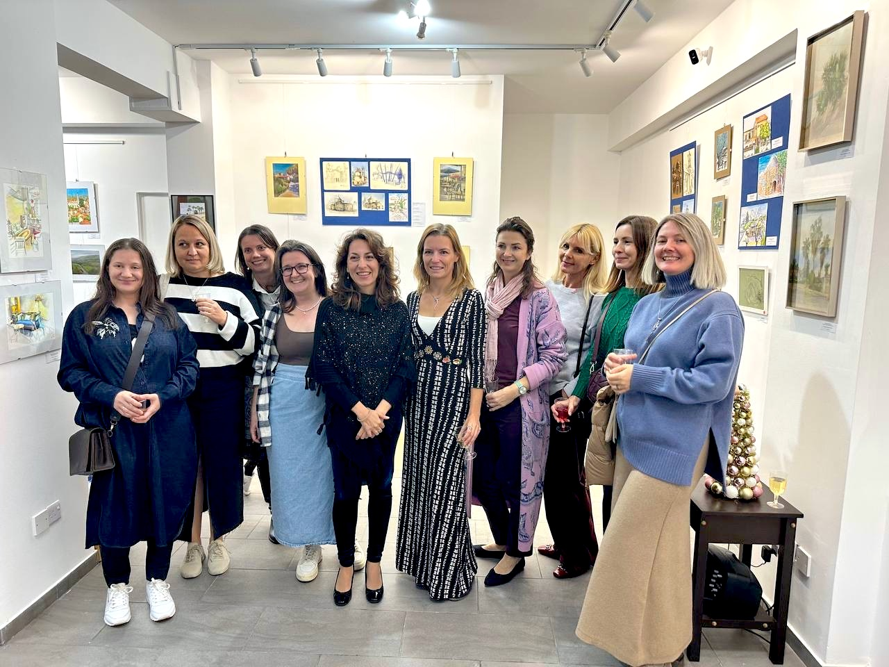
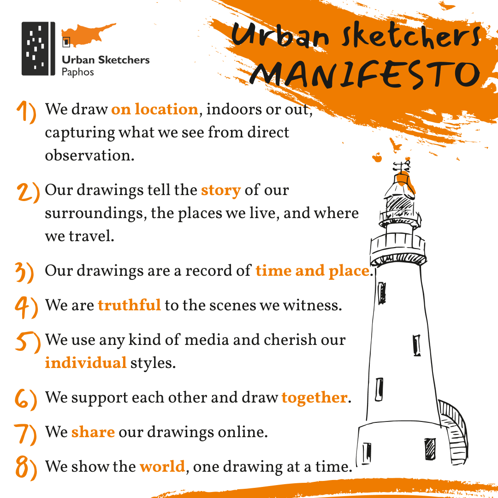

How a local sketching community was founded, branded, grown, and turned into a chapter of the global Urban Sketchers network — through community strategy, event production, and consistent creative identity.
"People don't join communities for content.
They join for identity and shared experience."
All growth was organic — no paid acquisition. Built through recurring participation, events, creative identity, partnerships, and word-of-mouth within the local community.



Starting point: zero audience, zero visibility, zero existing sketching culture in the city.
The strategy wasn't to build a following — it was to create a recurring shared experience that people wanted to be part of.
Growth became a byproduct of repeat participation, not the primary goal.
Events, workshops, artist talks, sketch trips, collaborations, and exhibitions created multiple ways for people to participate and stay involved over time.
People came to sketch and to meet other people, learn something new, or simply have somewhere to go in a new country.
Over time, participation evolved into belonging. Regular members started contributing ideas, bringing friends, helping organize events, and shaping the culture of the community itself.
The challenge wasn't only attracting people — it was creating conditions that made participation for both beginners and professional artists feel easy, meaningful, and worth returning to.
The community functioned as a dedicated environment for creative focus, social connection, and shared identity outside daily routine.

Brand identity was developed to reflect the community's values: direct observation, honest drawing, shared presence. The visual language — black liner sketch style with orange accents — was applied consistently across digital content, print materials, merchandise, and event production.
The manifesto wasn't written by me — it belongs to the global Urban Sketchers movement. But bringing it to life visually, and making it feel local and owned, was the brand challenge.
“People who joined the meetups as learners left the exhibition as exhibiting artists.”
“Paphos and Around” became the community’s largest project and a public milestone for the community.
For most exhibitors, it was their first time presenting work publicly. What started as casual participation evolved into creative confidence, visibility, and professional recognition.
Multiple media outlets covered the exhibition organically, helping drive attendance and extend the exhibition twice. Community members also sold original works and merchandise during the event.
A community doesn't grow when you post more. It grows when people have something to show up for.
People contribute more when participation creates visibility, recognition, and meaningful connection with others — not just information exchange.